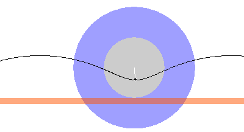
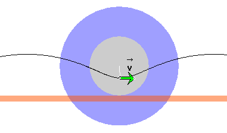
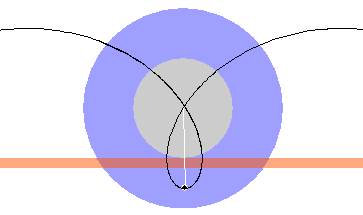
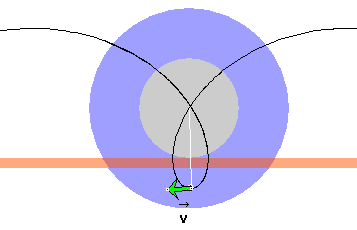
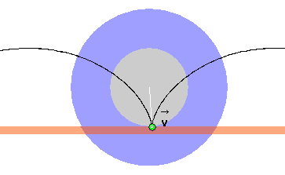
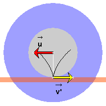
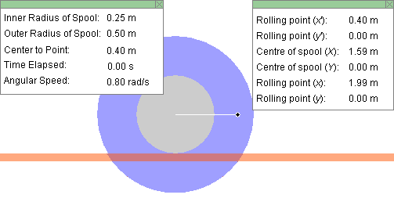
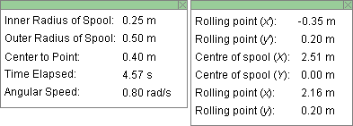
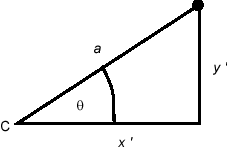

Prerequisites
Students should understand displacement and velocity as vector quantities and be able to work with their components. Students should know basic trigonometry and the concept of angular velocity.
Learning Outcomes
Students will develop an understanding of rolling motion as a superposition of a constant-velocity translational motion and a uniform circular motion. In particular, they will learn that when a wheel is rolling on a surface without slipping the point on the perimeter of the wheel that momentarily is in contact with the surface has zero velocity relative to the surface.
Instructions
Students should know how the applet functions, as described in Help and ShowMe.
The applet should be open. The step-by-step instructions in the following text are to be done in the applet. You may need to toggle back and forth between instructions and applet if your screen space is limited.
 Rolling Motion as Superposition
of Two Motions
Rolling Motion as Superposition
of Two Motions
 Appendix
Appendix
 Definitions of an Angle's Radian
Measure and of Angular Velocity
Definitions of an Angle's Radian
Measure and of Angular Velocity
Question 1. When a round object is rolling on a surface without slipping, what is the velocity of a point on the perimeter of the object at the moment the point makes contact with the surface? Here, "velocity" means velocity relative to the lab frame.
The round object could be a wheel, disk, cylinder, or sphere. In the case of the applet, it will be the central grey cylinder of the spool. It is rolling without slipping on the salmon-colored surface.
Answer.
Let's find the answer by experimenting with the applet.
Experiment 1. RESET the applet, and set the three sliders as follows:
Also, set the spool support to "Bottom" and select the Trace toggle button to display the revolving point's path.
With the settings above, the revolving point is situated on the inside of the rolling grey cylinder. PLAY the motion, and observe the path of the revolving point. You should obtain a wavy path form as shown in Figure 1 below. In the snapshot in Figure 1, the spool is rolling to the right.

Figure 1
The velocity  of the revolving point relative to the Lab frame is a vector
that points along the tangent to the revolving point's
path. In what direction is this velocity when the revolving
point is at its lowest point? Is the velocity zero perhaps?
of the revolving point relative to the Lab frame is a vector
that points along the tangent to the revolving point's
path. In what direction is this velocity when the revolving
point is at its lowest point? Is the velocity zero perhaps?
You can let the applet display the answer by checking
"Velocity v of revolving point relative to lab frame" on the
vector panel and stopping the motion when the revolving
point is at its lowest point. The velocity vector (green) is shown
in Figure 2 below.

Figure 2
Experiment 2. RESET the applet, and set the sliders as follows:
Compared to the settings used in Experiment 1, only the center-to-point distance (a) is changed. It is changed from 0.10 m to 0.40 m. Make sure that the spool support is still set to "Bottom".
The revolving point is now situated on the outside of the rolling cylinder. PLAY the motion, and observe the path of the revolving point. You should obtain a looping path form as shown in Figure 3 below. In the snapshot in Figure 3 the spool is rolling to the right.

Figure 3
In what direction is the velocity now when the revolving
point is at its lowest point? Is the velocity zero?
Figure 4 below shows that the velocity at the bottom point is to the left even though the spool is rolling to the right.

Figure 4
Experiment 3. RESET the applet, and set the sliders as follows:
This time, the center-to-point distance (a) is set to 0.25 m and the revolving point is on the perimeter of the inner cylinder which is rolling on the support rail. Make sure the spool support is set to "Bottom" as before.
PLAY the motion, and observe the path of the revolving point. You should obtain a path form with cusps as shown in Figure 5 below.

Figure 5
In what direction is the velocity now when the revolving
point is at its lowest point? Is the velocity zero?
A cusp is a point where the two branches of the trajectory just before and after the cusp point become parallel to each other. In the present case, the two branches approach vertical directions as they approach the cusp point. Therefore the velocity of the revolving point must approach a vertically downward direction upon approaching the cusp point and leave the cusp point with a vertically upward direction. Velocity is continuous. The velocity cannot jump from one direction to the exact opposite direction at the cusp point, unless the velocity is zero at the cusp point.
In Figure 5, the velocity vector at the cusp point has
degenerated to a green dot, which means that the velocity
is zero.
Summary. The velocity of the revolving point at the bottom of the point's path is
Thus a point on the perimeter of a rolling object has zero velocity relative to the surface the object is rolling on when the point makes contact with the surface. When the velocity of a point on the perimeter of a rolling object is not zero upon contact with the surface the object is rolling, the motion is not pure rolling motion but is rolling combined with slipping.
A further explanation of this is provided in the next section.

Superposition of two motions. Relative to the lab frame, the revolving point is carrying out two motions at once: a translational motion with constant velocityand a uniform circular motion around the center of the spool with instantaneous velocity
Relative to the lab frame, the displacement of the revolving point during a given time interval is the vector sum of its displacements according to these two other motions, and the revolving point's velocity
Exercise 1. RESET the applet, and make the following settings. Make sure the spool support is set to "Bottom".
PLAY and REVERSE the motion with the path displayed. Also
display the velocity vectors ' (yellow) and (red). If you stop the motion when the revolving
point is at the bottom of its path while the spool is moving
left, you should get a display like that in Figure 6 below.

Figure 6
Figure 6 shows that at the cusp point, the velocities
and
' are equal
in magnitude and opposite in direction. Thus, their vector
sum, i.e., the velocity relative to the lab frame, is zero.
Question 1. It is clear that, if the spool is moving
left, the velocity ' of the revolving point when it is at the bottom
is opposite to .
However, why is the magnitude of ' equal to the magnitude of ?
Answer. Imagine the surface of the spool's inner cylinder to be covered with ink like the ball of a ballpoint pen. When the spool is rolling on its support surface, the surface will get painted with this ink.
If the spool is rolling without slipping, the distance on the support surface that gets painted when the spool makes one revolution is equal to the circumference c of the spool's inner cylinder. Let T denote the time required for one revolution. Then u = c / T, and v' = c / T as well because in the frame of reference translating with the spool the revolving point performs circular motion and moves a distance c around the circle in time T. Therefore, u = v'.
Question 2. What is the revolving point's velocity relative to the lab frame at the top of the point's path if the spool is moving left?
Answer. At all points along the revolving point's path,
= ' + . At the top of the point's
path, ' = . Therefore, = 2, which means that points left and has
a magnitude equal to 2u. Check this with the applet.
Exercise 2. RESET the applet, and make the following settings. Make sure the spool support is set to "Bottom".
Display the data, and record them in your Notebook. Some of the values depend on the size of the browser window. Here we will use the values displayed in Figure 7 below.

Figure 7
With the path and all three velocity vectors displayed, PLAY/STEP the motion (spool moving to the right) up to t = 4.57 s or close to this time. Figure 8 below shows the configuration of the spool at this instant and the corresponding data. (Again, some of your data may be different depending on the size of the browser window. However, the changes in x and X between the times t = 0 and t = 4.57 s should not depend on the size of the browser window. All other quantities are unaffected by the size of the browser window.)


Figure 8
Given the data in Figure 7 and the elapsed time of 4.57 s, calculate the values of x', y', X, Y, x, y displayed in Figure 8.
Partial Answer. Here a partial answer will be provided. It is left up to the Reader to complete the answer.
x' and y'. Let's start with x' and y'. These are the coordinates of the revolving point in a coordinate system that has its origin at the center C of the spool. The right-angle triangle in Figure 9 below illustrates how these coordinates are defined.

Figure 9
From the definitions of the cosine and the sine in a right-angle triangle it follows that x'/a = cos q and y'/a = sin q whence
x' = a cos q  and
and  y' =
a sin q.
y' =
a sin q.  (1)
(1)
These expressions are true also for angles greater than 90o and even for negative angles. They are true for angles with values anywhere on the real axis. We need this range here. The angle q is the angle between the positive x-axis and the radius vector from the center of the spool to the revolving point. This angle can keep on increasing forever or decreasing forever as the spool is rolling left or right, respectively. (When the spool is rolling to the right, the radius vector is rotating clockwise so that q is decreasing.)
We need the concept of angular velocity. You can review it under Definitions of an Angle's Radian Measure and of Angular Velocity in the Appendix.
The angular velocity w with which the spool is rotating is constant. In the present case, with the spool rolling to the right and rotating clockwise, w is negative because q is decreasing. Note that the applet slider labeled "Angular Speed" sets the magnitude of the angular velocity.
Since t = 0 at the beginning of the motion, the time
elapsed until time t is equal to
w = q/t  (2)
(2)
whence
q = w
t . (3)
(3)
Substituting Expression (3) into Equations (1) gives
x' = a cos wt
 and
and
 y' = a sin wt.
y' = a sin wt.  (4)
(4)
Substituting a = 0.40 m, w = -0.80 rad/s, and t = 4.57 s gives
x' = 0.40×cos (-0.80×4.57) = -0.348 m .
 (5)
(5)
This value of x' is consistent with that displayed in Figure 8. It is the Reader's job to calculate y'.
X and Y. Next let's calculate the position coordinates of the spool's center. Y is always zero, so there is nothing to do there. X requires more work, but the calculation is instructive.
It would be easy to calculate X if we knew the velocity
. We know that
its direction is horizontal and to the right. From the
discussion in the answer to Question 1 above, we know that its
magnitude u is equal to c / T where
c is the circumference of the spool's inner cylinder and
T is the period of revolution of the spool.
The circumference c of the inner cylinder is equal to 2pr. With that, the speed u of the spool, (distance traveled)/(time elapsed), is equal to
u = 2pr/T .
 (6)
(6)
We need to relate u to the angular velocity w. The angular speed |w| is constant and therefore can be evaluated by dividing the angle corresponding to one revolution, 2p rad, by the period T. Remember that the angular velocity w is negative in the present case. Putting all this together gives
w = - 2pr/T . (7)
(7)
With this equation, Equation (6) can be written
u = 2pr/T =
(2p/T) r = -
(-2p/T) r = -
wr.  (8)
(8)
Thus, the spool's speed is proportional to both the rate at which the spool rotates and the radius of the spool's inner cylinder. This makes sense intuitively.
With w = - 0.80 rad/s and r = 0.25 m, Expression (8) gives
u = - (-0.80)×0.25 = 0.20 m/s .  (9)
(9)
With this value for u and the time elapsed t = 4.57 s, we get the displacement DX of the center of the spool as
DX = u t =
0.20×4.57 = 0.914 m .  (10)
(10)
Adding DX to the value of X at t = 0 gives the value of X at t = 4.57 s,
X = X(0) + DX
= 1.59 + 0.914 = 2.504 m . (11)
(11)
This is consistent with the value of 2.51 m shown in Figure 8 if one takes into consideration that the value X(0) = 1.59 m shown in Figure 7 is rounded to two decimals. It may well be rounded to this value from 1.593 m. With X(0) = 1.593 m, X would become 1.593 + 0.914 = 2.507 m, which would round to the value of 2.51 m shown in Figure 8.
x and y. Finally, we need to calculate the coordinates of the revolving point relative to the lab frame. Given the previous results, this task is easy if we recognize that the motion of the revolving point relative to the lab frame is the superposition of the revolving motion around the center of the spool and the translational motion of the center of the spool.
Because of our choice of coordinate origins, common origin of the (x,y) and (X,Y) coordinate and origin of the (x',y') coordinates at the center of the spool, the superposition of the two motions implies simply
x = x' + X  (12a)
(12a)
y = y' + Y  (12b)
(12b)
where the coordinates in these equations are all evaluated at the same instant.
It is left as an exercise for the Reader to substitute into Equations (12) the values for x', X, y', Y determined already, and compare the resulting values of x and y with those shown in Figure 8.
Challenge Problem. Calculate the velocities
' and
of the
revolving point at time t = 4.57 s.
>>>>> Appendix <<<<<

The definition of the radian measure of an angle does not involve time, but is given here in a context involving motion, the same context as that used for the definition of angular velocity.
The quantities needed are listed below and are illustrated in Figure A1. The Figure shows a green dot which represents a particle or point on a rotating object. The particle is assumed to be moving in a circle. If we need to deal with a rolling object, we must imagine the circle to be co-moving with the object and the following considerations to be in the reference frame in which the center of the rolling object is at rest.
The circle in which the particle or point on a rotating object is moving is thinly outlined. The center C of the circle is the vertex of the angle to be measured. We will refer to the vector from C to the particle as the radius vector. Its magnitude, i.e., the radius of the circle, is denoted r.

Figure A1
Symbols:
Radian measure of an angle. The radian measure of the angle Dq is given by the ratio
Dq = ±s/r  (A1)
(A1)
where the minus sign applies if P' is clockwise from P.
Example: If s = 0.6 cm and r = 4.0 cm, then Dq = 0.6/4.0 = 0.15 rad.
Note that angles in radians can be treated like dimensionless numbers in a dimensional analysis because their measure is the ratio of two dimensionally equal quantities, namely, lengths.
Average angular velocity and angular velocity. The average angular velocity during the time interval Dt, wav, is defined by the following ratio:
wav = Dq/Dt .
 (A2)
(A2)
The angular velocity at a given instant, w, is the limit of the average angular velocity as Dt goes to zero, where the time interval over which the average angular velocity is calculated contains the given instant.
It is customary when dealing with angular velocity to measure angles in radians. The SI-unit of angular velocity is rad/s.
Relationship Between Angular Speed and Speed. The average speed vav during the time interval Dt is defined as the ratio
vav = s/Dt.  (A3)
(A3)
By substituting Expression (A1) for Dq into Equation (A2) and then using Definition (A3), one obtains for the average angular speed
|wav| =
(s/Dt)/r =
vav /r. (A4)
(A4)
This is a very useful relation. When solved for vav it becomes
vav = r |wav| .  (A5)
(A5)
An equation analogous to (A5) applies for the (instantaneous) speed v,
v = r |w| .
 |
(A6)
|
(A6)
So far, everything has been in the frame of reference in which the center C of the circle is at rest. The speed v in Equation (A6) has been the speed of a point on a circle of radius r, and this point has been moving with angular speed |w| around point C.
However, Equation (A6) also can be applied to a rolling object. In this case, v can be interpreted as the speed of the center C of the rolling object relative to the Lab frame while |w| is the same angular speed of rotation as before. The reason why Equation (A6) can be interpreted this way is as follows.
Suppose we have a rolling disk. Imagine a tape to be wound around the perimeter of the disk. This tape unrolls as the disk rolls along. A length of tape equal to the disk's circumference will unroll as the disk makes one revolution, and this is how far the center of the disk moves forward at the same time. More generally, during a time interval Dt in which a point on the perimeter of the disk moves a distance s from P to P' (see Figure A1) in the frame in which C is at rest, the center C moves forward an equal distance s relative to the Lab frame. Dividing by Dt, this implies that the speed of the point on the perimeter of the disk relative to point C is equal to the speed of point C relative to the lab frame.
Equation (A6) when applied to a rolling object is the "no-slipping" condition because the equation was derived assuming pure rolling motion. At which point in the derivation was the assumption of rolling without slipping necessary?
Exercise. Verify that Equations (A5) and (A6) are correct dimensionally.